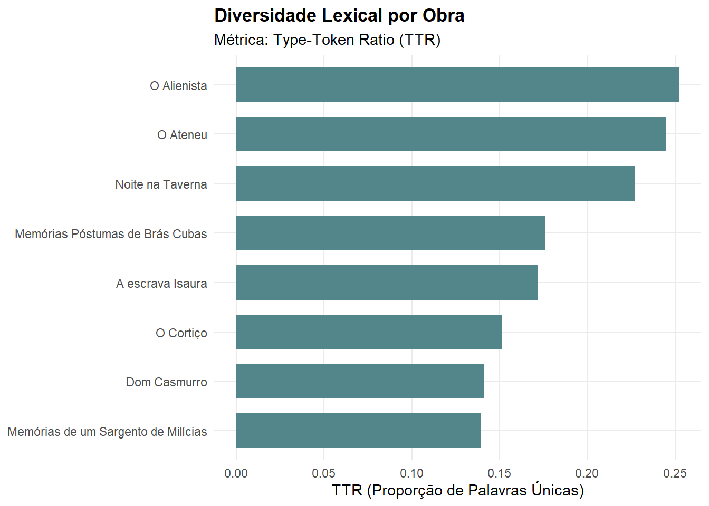
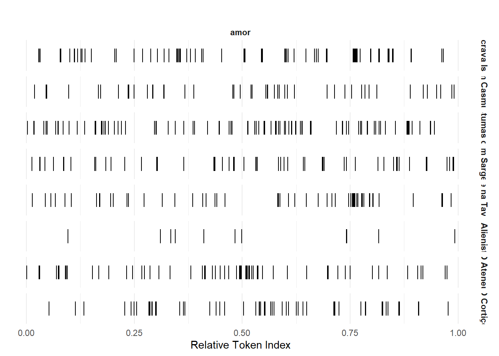
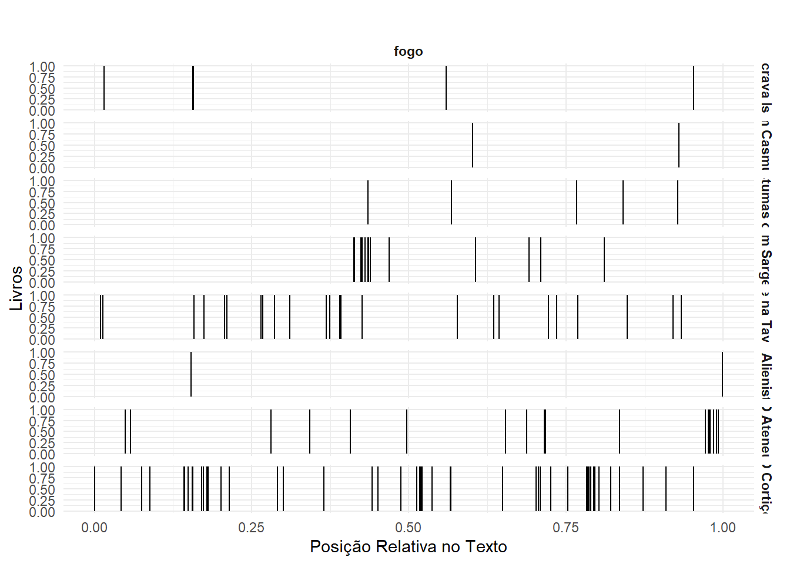

Todos os datasets fornecidos pelo pacote literaturaBR possuem a mesma estrutura, onde cada linha corresponde a um parágrafo de um livro e contêm 5 variáveis:
book_name: Nome original do livro;
chapter_name: Nome original do capítulo do livro do parágrafo;
url: Link para artigo do Wikisouce de onde o capítulo do parágrafo foi extraído;
paragraph_number: Ordem do parágrafo em seu capítulo;
text: Texto do parágrafo. Contem acentos e pontuação.
Rows: 9,402
Columns: 5
$ book_name <chr> "O Alienista", "O Alienista", "O Alienista", "O Alien…
$ chapter_name <chr> "Capítulo I", "Capítulo I", "Capítulo I", "Capítulo I…
$ url <chr> "https://pt.wikisource.org/wiki/O_Alienista/I", "http…
$ paragraph_number <int> 1, 2, 3, 4, 5, 6, 7, 8, 9, 10, 11, 12, 13, 14, 1, 2, …
$ text <chr> "As crônicas da vila de Itaguaí dizem que em tempos r…
Code
df_corpus<-df%>%# agrupar por livrogroup_by(book_name)%>%# formatar o dataframe para que so tenha uma linha por livrosummarise(text =paste0(text, sep ="", collapse =". "))dim(df_corpus)
[1] 8 2
6.3 Contagem de Palavras
Com base na função summary, é possível verificar a quantidade de informação básica das palavras.
Corpus consisting of 8 documents, showing 8 documents:
Text Types Tokens Sentences
A escrava Isaura 9350 64929 1761
Dom Casmurro 9863 80273 3644
Memórias Póstumas de Brás Cubas 11059 74223 3217
Memórias de um Sargento de Milícias 8704 71391 2288
Noite na Taverna 4264 21830 1255
O Alienista 4388 19977 784
O Ateneu 15341 73063 3563
O Cortiço 12700 98762 4173
Vamos então criar uma document-feature matrix a partir desse corpus criado, tomando o cuidade de remover pontuações e stopwords:
Code
library(quanteda)# 1. Tokenizar o corpus removendo pontuação e símbolostokens_corpus<-tokens(meu_corpus, remove_punct =TRUE, remove_symbols =TRUE, remove_numbers =TRUE)# 2. Converter para minúsculas (essencial para que 'Ele' e 'ele' sejam a mesma palavra)tokens_corpus<-tokens_tolower(tokens_corpus)# 3. Remover stopwords em portuguêstokens_clean<-tokens_remove(tokens_corpus, pattern =stopwords("portuguese"))# 4. Criar a Document-Feature Matrix (DFM)corpus_dfm<-dfm(tokens_clean)# --- ANÁLISES ---# A) As 30 palavras mais comuns no corpus INTEIRO (todos os livros somados)top_words_geral<-topfeatures(corpus_dfm, n =30)print("--- 30 Palavras mais comuns no geral ---")
é casa tudo ainda tempo bem todos dia olhos ser tão
2675 963 844 817 699 691 634 624 619 619 596
nada agora vez disse homem coisa assim outro então havia sobre
593 588 580 578 554 554 553 552 547 546 532
lá pouco porque outra vida dois dias logo
529 502 484 482 478 475 455 441
Code
# B) As 30 palavras mais comuns de um livro ESPECÍFICO (ex: A Escrava Isaura)# Primeiro filtramos a DFM para conter apenas o documento desejadodfm_isaura<-dfm_subset(corpus_dfm, docnames(corpus_dfm)=="O escravo Isaura"|docnames(corpus_dfm)=="escrava_isaura")# Nota: Verifique o nome exato que aparece no summary(meu_corpus) para bater com o filtrotop_words_book<-topfeatures(dfm_isaura, n =30)print("--- 30 Palavras mais comuns em 'Escrava Isaura' ---")
[1] "--- 30 Palavras mais comuns em 'Escrava Isaura' ---"
# C) Retorna a ocorrência das 15 palavras mais frequentes do dataset em cada livro# Primeiro ordenamos a DFM pela frequência das palavrasdfm_ordenada<-dfm_sort(corpus_dfm, margin ="features")print("--- Matriz de ocorrência (8 livros x 15 palavras mais frequentes) ---")
[1] "--- Matriz de ocorrência (8 livros x 15 palavras mais frequentes) ---"
Document-feature matrix of: 8 documents, 15 features (0.00% sparse) and 0 docvars.
features
docs é casa tudo ainda tempo bem todos dia
A escrava Isaura 424 98 78 121 81 175 78 41
Dom Casmurro 714 169 189 141 119 90 72 107
Memórias Póstumas de Brás Cubas 492 107 98 89 108 65 69 89
Memórias de um Sargento de Milícias 305 193 192 131 207 126 139 128
Noite na Taverna 93 6 48 46 17 22 16 35
O Alienista 88 108 26 29 20 10 37 21
features
docs olhos ser
A escrava Isaura 70 96
Dom Casmurro 162 167
Memórias Póstumas de Brás Cubas 138 97
Memórias de um Sargento de Milícias 48 75
Noite na Taverna 25 7
O Alienista 17 25
[ reached max_ndoc ... 2 more documents, reached max_nfeat ... 5 more features ]
6.4 Document-Feature Matrix
Code
# Tokenizar o corpustokens_corpus<-tokens(meu_corpus, remove_punct =TRUE)# Criar o dfm a partir dos tokenscorpus_dfm<-dfm(tokens_corpus)# Agrupar o dfm por livrocorpus_dfm_grouped<-dfm_group(corpus_dfm, groups =df_corpus$book_name)# Remover Pontuações/stopwordscorpus_dfm_grouped<-dfm_remove(corpus_dfm_grouped, quanteda::stopwords("portuguese"))# Usar topfeatures para obter as 30 palavras mais comunstop_words<-topfeatures(corpus_dfm_grouped, 30)print(top_words)
é casa tudo ainda tempo bem todos dia olhos ser tão
2675 963 844 817 699 691 634 624 619 619 596
nada agora vez disse homem coisa assim outro então havia sobre
593 588 580 578 554 554 553 552 547 546 532
lá pouco porque outra vida dois dias logo
529 502 484 482 478 475 455 441
Code
# Para um livro específico (substitua "NomeDoLivro" pelo nome real do livro)top_words_book<-topfeatures(corpus_dfm_grouped[, df_corpus$book_name=="escrava_isaura"], 30)print(top_words_book)
Document-feature matrix of: 8 documents, 15 features (0.00% sparse) and 0 docvars.
features
docs de a que e o não um do da
A escrava Isaura 2141 1718 1955 2182 1254 841 517 503 434
Dom Casmurro 1945 2454 2679 2175 1643 1524 759 586 623
Memórias Póstumas de Brás Cubas 2050 2438 2170 1936 1661 1144 958 672 640
Memórias de um Sargento de Milícias 2264 2134 2310 1868 2117 806 707 669 542
Noite na Taverna 579 679 464 576 525 173 303 257 201
O Alienista 558 692 549 525 626 282 258 259 218
features
docs com
A escrava Isaura 570
Dom Casmurro 536
Memórias Póstumas de Brás Cubas 578
Memórias de um Sargento de Milícias 658
Noite na Taverna 101
O Alienista 135
[ reached max_ndoc ... 2 more documents, reached max_nfeat ... 5 more features ]
6.5 Ocorrência das Palavras
A função dfm_sort() retorna a ocorrência de cada palavra (também chamado de token ou feature) em cada livro. Para pesquisar a ocorrência de alguma palavra específica nos documentos, use a função dfm_select().
Code
# Ocorrências da palavrasdfm_select(corpus_dfm, "amor")
Document-feature matrix of: 8 documents, 1 feature (0.00% sparse) and 0 docvars.
features
docs amor
A escrava Isaura 71
Dom Casmurro 20
Memórias Póstumas de Brás Cubas 53
Memórias de um Sargento de Milícias 30
Noite na Taverna 44
O Alienista 3
[ reached max_ndoc ... 2 more documents ]
Document-feature matrix of: 8 documents, 1 feature (0.00% sparse) and 0 docvars.
features
docs fogo
A escrava Isaura 5
Dom Casmurro 3
Memórias Póstumas de Brás Cubas 2
Memórias de um Sargento de Milícias 16
Noite na Taverna 20
O Alienista 1
[ reached max_ndoc ... 2 more documents ]
Document-feature matrix of: 8 documents, 1 feature (12.50% sparse) and 0 docvars.
features
docs paixão
A escrava Isaura 16
Dom Casmurro 7
Memórias Póstumas de Brás Cubas 14
Memórias de um Sargento de Milícias 4
Noite na Taverna 3
O Alienista 0
[ reached max_ndoc ... 2 more documents ]
Document-feature matrix of: 8 documents, 1 feature (12.50% sparse) and 0 docvars.
features
docs padre
A escrava Isaura 1
Dom Casmurro 112
Memórias Póstumas de Brás Cubas 8
Memórias de um Sargento de Milícias 20
Noite na Taverna 0
O Alienista 22
[ reached max_ndoc ... 2 more documents ]
6.6 Contexto das Palavras
Para identificar o contexto em que cada palavra aparece, pode-se usar a função kwic() ou tokens() para isso:
Keyword-in-context with 10 matches.
[A escrava Isaura, 60067] solenidade, e também o | padre |
[Dom Casmurro, 1074] seca que as memórias do | padre |
[Dom Casmurro, 1810] a idéia de o fazer | padre |
[Dom Casmurro, 1848] Constituinte, e que o | padre |
[Dom Casmurro, 1929] , se tem de ser | padre |
[Dom Casmurro, 1957] há mesmo necessidade de fazê-lo | padre |
[Dom Casmurro, 3592] . — Deve acostumar-se. | Padre |
[Dom Casmurro, 3617] mesmo, ainda não sendo | padre |
[Dom Casmurro, 4984] a acabou foi levá-la ao | Padre |
[Dom Casmurro, 6063] e doutrina, por aquele | padre |
para celebrar o casamento.
Luís Gonçalves dos Santos,
, tem-se ganho o principal
Feijó governou o Império.
, realmente é melhor que
?. — É promessa
que seja, se for
, se quiser florear como
Eterno.. — Senhor
Cabral, velho amigo do
6.7 Palavras mais Utilizadas
Para saber as palavras mais usadas, dentre os vários métodos possíveis para isso, pode-se usar a função topfeatures().
Code
topfeatures(corpus_dfm, groups =df_corpus$book_name)
$`A escrava Isaura`
e de que a o não em com um para
2182 2141 1955 1718 1254 841 633 570 517 515
$`Dom Casmurro`
que a e de o não um é os da
2679 2454 2175 1945 1643 1524 759 714 657 623
$`Memórias de um Sargento de Milícias`
que de a o e não em um se do
2310 2264 2134 2117 1868 806 723 707 684 669
$`Memórias Póstumas de Brás Cubas`
a que de e o não um do uma da
2438 2170 2050 1936 1661 1144 958 672 654 640
$`Noite na Taverna`
a de e o que um uma do como da
679 579 576 525 464 303 290 257 210 201
$`O Alienista`
a o de que e não do um da os
692 626 558 549 525 282 259 258 218 179
$`O Ateneu`
de a o do e que da um os em
2949 2347 2081 1219 1174 1156 1039 868 750 610
$`O Cortiço`
de a e o que não com um da do
3415 3030 2980 2554 2375 1117 1045 1032 922 880
6.8 Comparação entre Livros
Algo interessante a se fazer é quantificar a similaridade e a dissimilaridade ou distância entre os livros. As funções textstat_simil e textstat_dist implementam diversas técnicas e algoritmos para isso. Sugiro ler a documentação completa das funções e ler as referências indicadas para conhecer melhor os métodos de cálculo.
Vamos então calcular a similaridade entre os livros presentes no pacote:
textstat_simil object; method = "correlation"
A escrava Isaura Dom Casmurro
A escrava Isaura 1.000 0.949
Dom Casmurro 0.949 1.000
Memórias Póstumas de Brás Cubas 0.955 0.981
Memórias de um Sargento de Milícias 0.957 0.947
Noite na Taverna 0.920 0.925
O Alienista 0.924 0.942
O Ateneu 0.882 0.866
O Cortiço 0.966 0.943
Memórias Póstumas de Brás Cubas
A escrava Isaura 0.955
Dom Casmurro 0.981
Memórias Póstumas de Brás Cubas 1.000
Memórias de um Sargento de Milícias 0.962
Noite na Taverna 0.956
O Alienista 0.964
O Ateneu 0.913
O Cortiço 0.965
Memórias de um Sargento de Milícias
A escrava Isaura 0.957
Dom Casmurro 0.947
Memórias Póstumas de Brás Cubas 0.962
Memórias de um Sargento de Milícias 1.000
Noite na Taverna 0.928
O Alienista 0.957
O Ateneu 0.913
O Cortiço 0.972
Noite na Taverna O Alienista O Ateneu
A escrava Isaura 0.920 0.924 0.882
Dom Casmurro 0.925 0.942 0.866
Memórias Póstumas de Brás Cubas 0.956 0.964 0.913
Memórias de um Sargento de Milícias 0.928 0.957 0.913
Noite na Taverna 1.000 0.929 0.923
O Alienista 0.929 1.000 0.923
O Ateneu 0.923 0.923 1.000
O Cortiço 0.944 0.958 0.939
O Cortiço
A escrava Isaura 0.966
Dom Casmurro 0.943
Memórias Póstumas de Brás Cubas 0.965
Memórias de um Sargento de Milícias 0.972
Noite na Taverna 0.944
O Alienista 0.958
O Ateneu 0.939
O Cortiço 1.000
Passemos então para a análise da dissimilaridade ou distância entre os livros, com o auxílio de um dendograma:
Code
library(quanteda)library(quanteda.textstats)library(stats)# 1. Normalizar a DFM (transformar contagem absoluta em frequência relativa / proporção)# Isso impede que livros mais longos distorçam a distância Euclidianacorpus_dfm_norm<-dfm_weight(corpus_dfm, scheme ="prop")# 2. Calcular a matriz de distância Euclidiana entre os documentos (livros)corpus_dist<-textstat_dist(corpus_dfm_norm, method ="euclidean", margin ="documents")# 3. Converter o objeto do quanteda para uma matriz de distância nativa do Rdist_matrix<-as.dist(corpus_dist)# 4. Executar o agrupamento hierárquico (método Ward de preferência, ou o padrão "complete")hc<-hclust(dist_matrix, method ="ward.D2")# 5. Plotar o Dendrograma estilizadoplot(hc, main ="Dendrograma de Similaridade dos Livros", xlab ="Livros (Clustering Hierárquico)", sub ="Distância Euclidiana / Método Ward", hang =-1)# Alinha as folhas do dendrograma na base
library(lexiconPT)# importar lexico de sentimentosdata("oplexicon_v3.0")df.token<-df.token%>%inner_join(oplexicon_v3.0, by ="term")
Para isso, primeiro precisamos normalizar os livros, visto que eles apresentam tamanhos e quantidades de capítulos diferentes.
Code
# extrair capitulos de cada livrodf_chapter_number<-df.token%>%distinct(book_name, chapter_name)%>%group_by(book_name)%>%# normalizar capitulo de acordo com sua posicao no livromutate(chapter_number_norm =row_number()/max(row_number()))glimpse(df_chapter_number)
Rows: 430
Columns: 3
Groups: book_name [8]
$ book_name <chr> "O Alienista", "O Alienista", "O Alienista", "O Al…
$ chapter_name <chr> "Capítulo I", "Capítulo II", "Capítulo III", "Capí…
$ chapter_number_norm <dbl> 0.07692308, 0.15384615, 0.23076923, 0.30769231, 0.…
Agora calculamos o sentimento de cada capítulo, que corresponde à soma da polaridade de suas palavras:
Code
library(tidytext)library(tidyverse)library(lexiconPT)# 1. Preparar o dicionário de sentimentosdic_sentimento<-oplexicon_v3.0%>%select(term, polarity)# 2. Tokenizar, calcular a polaridade e gerar a posição relativa do capítulodf.sentiment<-df%>%tidytext::unnest_tokens(output =term, input =text)%>%inner_join(dic_sentimento, by ="term")%>%group_by(book_name, chapter_name)%>%summarise(polarity =sum(polarity, na.rm =TRUE), .groups ="drop_last")%>%# Calcula a numeração sequencial e relativa dos capítulos por livromutate(chapter_number =row_number(), chapter_number_norm =chapter_number/max(chapter_number))%>%ungroup()%>%arrange(book_name, chapter_number_norm)# 3. Seu gráfico original de linhasdf.sentiment%>%ggplot(aes(x =chapter_number_norm, y =polarity))+geom_line()+facet_wrap(~book_name, ncol =4, labeller =label_wrap_gen(20))+labs(x ="Posição relativa no livro", y ="Sentimento")+theme_bw()
document TTR
1 A escrava Isaura 0.1718207
2 Dom Casmurro 0.1408898
3 Memórias Póstumas de Brás Cubas 0.1760003
4 Memórias de um Sargento de Milícias 0.1394531
5 Noite na Taverna 0.2270376
6 O Alienista 0.2522282
7 O Ateneu 0.2446424
8 O Cortiço 0.1513582
Code
# 2. Gerar o gráfico corrigidolexdiv%>%# Renomeia 'document' para 'livro' para manter sua estruturarename(livro =document)%>%# Ordena os livros pelo valor do TTRmutate(livro =forcats::fct_reorder(livro, TTR))%>%# Gráficoggplot(aes(x =livro, y =TTR))+geom_col(fill ="cadetblue4", width =0.7)+coord_flip()+labs( title ="Diversidade Lexical por Obra", subtitle ="Métrica: Type-Token Ratio (TTR)", x =NULL, y ="TTR (Proporção de Palavras Únicas)")+theme_minimal(base_size =11)+theme( plot.title =element_text(face ="bold"), panel.grid.minor =element_blank())

O livro que apresenta a maior diversidade léxica, de acordo com a métrica Type-Token Ratio (TTR), é O Alienista. Ateneu vem bem atrás dos demais.
6.11 Ocorrência das Palavras/Livros
6.11.1 Gráfico de Dispersão Lexical
Code
library(quanteda)library(quanteda.textplots)library(stringr)# 1. Tokenizar o corpus (obrigatório para o kwic nas versões recentes)meu_corpus%>%tokens()%>%# 2. Buscar o termo desejado (ignorando maiúsculas/minúsculas com regex)kwic(pattern ="amor", valuetype ="regex")%>%# 3. Gerar o gráfico de dispersão lexicaltextplot_xray(scale ="relative")+# 4. Ajustes estéticos para limpar o visual e espaçar os nomes dos livrosscale_y_discrete(labels =function(x)str_wrap(x, width =20))+labs( title ="", x ="Relative Token Index", y =NULL)+theme_minimal()+theme( plot.title =element_text(face ="bold", hjust =0.5), strip.text =element_text(face ="bold"))

Code
library(quanteda)library(quanteda.textplots)# 1. Criar os tokens a partir do corpus (passo obrigatório para o kwic moderno)tokens_para_busca<-tokens(meu_corpus)# 2. Buscar a palavra "amor" (usando 'valuetype = "regex"' para ignorar maiúsculas/minúsculas)termo_busca<-kwic(tokens_para_busca, pattern ="fogo", valuetype ="regex")# 3. Gerar o gráfico de raio-X com a escala relativatextplot_xray(termo_busca, scale ="relative")+labs( title ="", x ="Posição Relativa no Texto", y ="Livros")+theme_minimal()+theme( plot.title =element_text(face ="bold", hjust =0.5), strip.text =element_text(face ="bold"))

6.12 Nuvem de Palavras
Usando um outro exemplo, utilizou-se as respostas de 2 perguntas realizadas em entrevista na cidade de Altamira.
O seguinte objeto é mascarado por 'package:ggplot2':
last_plot
O seguinte objeto é mascarado por 'package:stats':
filter
O seguinte objeto é mascarado por 'package:graphics':
layout
Code
library(DT)# Criar um vetor com as palavras/frases fornecidasdados_alegria<-c("Falar com Deus, jogar bola, anda de bike com os amigos","Brincar, comer, estudar e andar de ônibus","Ficar feliz, brincar","É divertir","Brincar com irmãos, assistir televisão","Flor, eu gosto de flor","Comida","Ver o sol, comer caju, come bolo","Tomar banho na praia","Ter um cachorrinho","Ir para praia, ir pra aula, ir pra Santarém, ir no centro","É quando fico alegre","Quando eu lavo louça","É brincar","Assistir televisão","Alegria é quando estamos alegre, quando dão as coisa pra gente fica alegre","Não sei","Quando a gente tá feliz","Alegria é estudar, fico feliz porque a mamãe compra tudo pra mim comer quando estou com fome, é ficar alegre","Alegria é quando estamos estudando","Brincar e se divertir","Brincar","Ficar mamãe, gosto da mamãe, vovô","Quando a gente ficar estudando","Alegria é brincar com minhas irmãs e minha prima Andressa","Respeitar, obedecer a mae, fazer tudo o que ela mandar e eu ajudar ela","Diversão, gosto de brincar, pescar, joga bola e ir na praia","Dormir la em casa","Ter família","É brincar e correr","Quando sinto felicidade e vejo alguém que amo","É meus irmãos. Eles são especiais para mim","Quando ganho alguma coisa, e quando a mamãe me leva pro parque","Jesus, ir no rio pegar peixinho, concha e sapinho","Morar para santarém","Ir pra casa. Ir com a mamãe e papai. Quando vai pra casa fico alegre","Papai, a vovó","QUANDO A GENTE FICA ALEGRE COM UMA PESSOA","É brincar","Amor e carinho","Brincar, quando tenho cachorrinho, quando to tomando banho na praia","Só quando eu brinco com meus coleguinhas","É a gente brincar e se divertir e passear","A mamãe, porque ela é bonita, o Gabriel me deixa alegre, porque ele não briga. Eu lavo prato.","Brincar com as pessoas de boneca. Brincar com os irmãos. Cuidar do bebê. Dar banho e coloca fralda com a ajuda da irmã","Quando a gente ficar estudando","É animado, com presente, papai quando vem, traz algum presente ora mim, muito animado.","Sorrir (sorrio e gargalhou)","Dormir la em casa","Gostar do pai, irmão e da mãe","Fazer trabalho, estudar, brincar","É FELIZ")
Code
dados_tristeza<-c("Não jogar bola e não andar de bike","Triste, chorar, falarem mal de mim e me empurrar","Quando fico brabo, não compartilhar o brinquedo com o amigo","Chorar","Quando o Heitor bate em mim (irmão), mas o Hercules não (outro irmão), e quando brigam por causa de brinquedo","A minha vó morreu","Chuva","Gosto de garrafa verde e ninguém deixa, triste","Não ir na praia","Quando minha mãe vai embora","Não sei","Quando eu fico triste quando acontece alguma coisa e fico triste","Quando me jogam ovo no meu aniversário","É o sol, porque deixa muito quente","Feliz","Quando fica chorando","Quando meu amigo me chuta ai fico triste","Quando a gente tá triste, umas vezes a gente chora, outras não chora","Não sei como é","Fico chorando, triste","Fico mal e fico doente","Saudade da avó","Tristeza, saudade","Quando alguém fica brabo","É ver minhas irmãs brigando e parando de brincar comigo","Quando minha mae bate na minha irmã Yara, fazer vergonha e não dizer desculpa","Quando a mamãe bate e a gente chora","Não sei","Não ser obediente com a mãe","Partir o coração","Quando alguém morre","É quando meus pais me batem","Quando o papai vai embora pra santarém","Quando a concha fura meu pé e quando o lago é muito fundo","Não sei fiquei triste porque conhecia ela (avó)","Quando venho pra escola e o papai vai embora, eu choro. Quando papai deixa na escola e vai embora","Papai, porque ele só briga","QUANDO FICA TRISTE, QUANDO UM APESSOA MENTE PRA MIM EU FICO MUITO TRISTE","Quando falam mal de mim","Chorar","Quando minha mae me bate, quando não tenho brinquedo","Não tenho tristeza","É a gente ficar sozinho e não querer barulho","É não beliscar, porque quando o coleguinha senta perto e não é pra beliscar. Dor de cabeça. Dor de garganta. Dodói.","A mãe ralha. Mãe bate. Mãe castiga. Na escola quando o colega puxa o cabelo","Quando alguém fica brabo","Quando chora, quando alguém bate, corro pra minha mãe.","Chorar","Não sei","A mãe rabiscar a atividade. Não fazer birra e nem chamar palavrão","Quando eu caio, quando fico brabo, quando estou doente","É TRISTE, CHORA")
Code
# Armazenar no objeto chamado corpus1corpus_alegria<-Corpus(VectorSource(dados_alegria))corpus_tristeza<-Corpus(VectorSource(dados_tristeza))# Pré-processamento de texto: converter para minúsculas, remover pontuação, etc.corpus_alegria<-tm_map(corpus_alegria, content_transformer(tolower))corpus_alegria<-tm_map(corpus_alegria , removePunctuation)corpus_alegria<-tm_map(corpus_alegria , removeNumbers)corpus_alegria<-tm_map(corpus_alegria , removeWords, stopwords("portuguese"))corpus_alegria<-tm_map(corpus_alegria , stripWhitespace)corpus_tristeza<-tm_map(corpus_tristeza, content_transformer(tolower))# Converter para minúsculascorpus_tristeza<-tm_map(corpus_tristeza, removePunctuation)# Remover pontuaçãocorpus_tristeza<-tm_map(corpus_tristeza, removeNumbers)# Remover númeroscorpus_tristeza<-tm_map(corpus_tristeza, removeWords, stopwords("portuguese"))# Remover palavras comunscorpus_tristeza<-tm_map(corpus_tristeza, stripWhitespace)
Code
# Criar uma matriz de termostdm<-TermDocumentMatrix(corpus_alegria)tdm_tristeza<-TermDocumentMatrix(corpus_tristeza)# Converter a matriz de termos em uma matriz de dadosm<-as.matrix(tdm)word_freqs<-sort(rowSums(m), decreasing =TRUE)m_tristeza<-as.matrix(tdm_tristeza)word_freqs_tristeza<-sort(rowSums(m_tristeza), decreasing =TRUE)
Code
# Criar a nuvem de palavras Alegriawordcloud(names(word_freqs), word_freqs, min.freq =1, max.words =200, random.order =FALSE, random.color =TRUE, scale=c(6,0.5), colors=brewer.pal(8, "Dark2"))